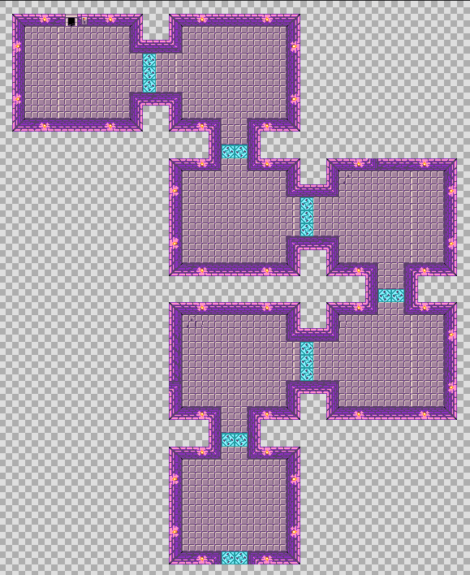
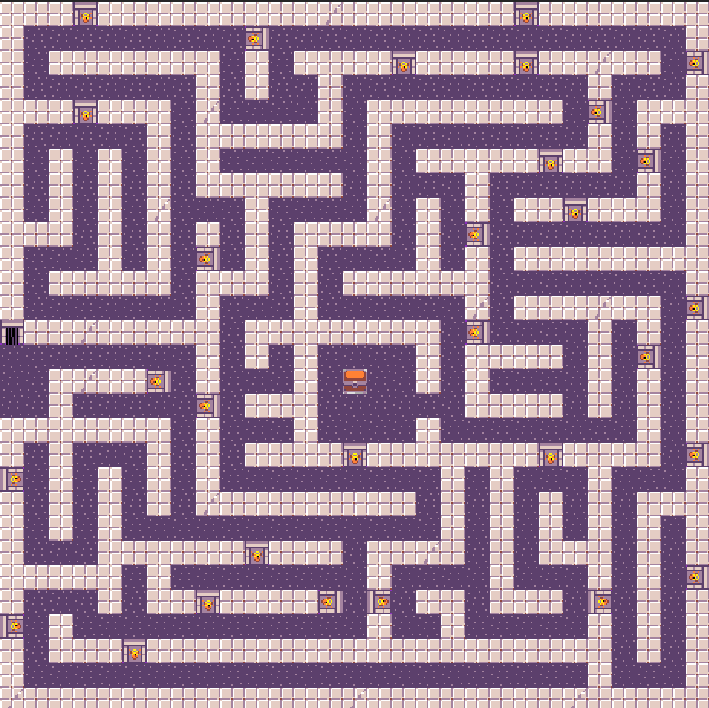

Jokoa irabazteko bi fase nagusi gainditu behar dituzu:
| Garaipenaren Urratsak | |
|---|---|
|
1. Fasea: Txanponak Gazteluko korridoreetan zehar 10 txanpon bildu behar dituzu hurrengo mailara pasatzeko. |
 |
|
2. Fasea: Gela Iluna Mamu beltz azkarragoen artean bizirik iraun behar duzu. 120 segundo dituzu harribitxia aurkitzeko. |
 |
|
AZKEN HELBURUA: Harribitxia hartu eta 11 puntu lortzean, "GAME OVER - GANASTE" mezua agertuko da! |
|